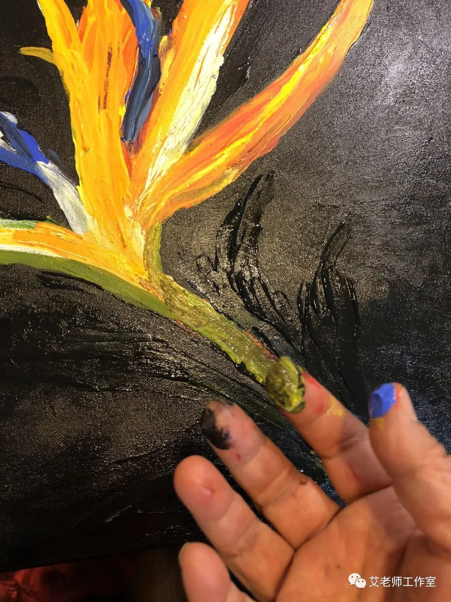
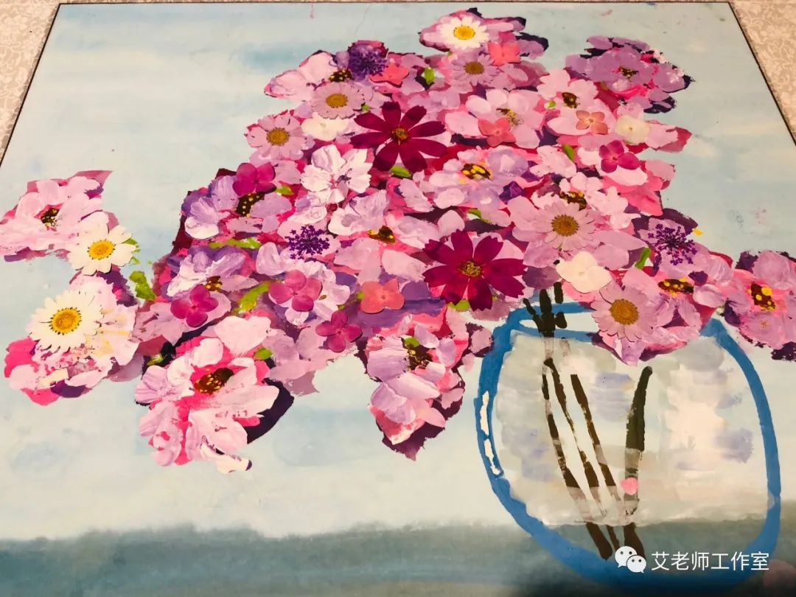

去武汉看病，罕见病儿一家三口被困，救命药告急 | 武汉日记
原文链接 备份链接 武汉日记 这个冬天，我们遇上了一个从未见过的“新型冠状病毒肺炎”，遭遇了前所未有的冲击，防疫是当下全国人民的重点。在封城之后，在重点疫情区的武汉人民过得怎样？ 南方都市报官方微信将陆续推出“武汉日记”，通过武汉当地人的 …
2020 02 26
走了
艾晓明
武汉的田先生说
照片上左三是小区邻居
前天走了 上有老下有小
左四是他的妻子
女儿与我的大孙子同龄
武汉的王先生说
我高中的班主任走了
夏天时我还去探望过他
他请我们吃了饭
又把我送到路口
至今记得他说
这么热的天
你不该来的
那位灵车后嚎啕的女人说
琴琴啊 你的爸爸就这样走了啊
你没有爸爸了
仙桃的刘文雄医生走了
1月21日 他看了180位病人
一个月里 他接诊3181人
每天晚上还要接电话问诊
一个月只休息了两天
第三天因为胸痛去了医院
夏思思医生走了 留下两岁的孩子
她满月一样的脸庞让我想起小时候
终年29 为什么是29
无解的数字和永恒的哀愁
很远很远的一个养蜂人
也撇下他的蜂群走了
蜜蜂在花间翩飞
蜂蜜已封装入瓶
大路空旷 他就是不等了
妈妈走的时候说
对不起 姑娘
我先走了
你要找个好人嫁啊
不想拖累你们
爷爷走的时候
没留下一句遗嘱
高烧燃尽了体内的病毒
死因写的是 帕金森
有个爸爸悄悄走了
手机里有一串求助记录
我发烧了 我发烧了
社区回复 没办法啊
没有医院接收啊
爸爸走的时候
不带门钥匙
也有的人不想走
被拖起来拖到楼下
我听见一位男人一路在喊
让我把电视关了
让我把门锁了
让我把手机拿着
唉 你怎么打人啊
打他的人在按他的头
要他蹲下戴口罩
方舱里的病友说
我经历了七个
全部走掉了
医生对家属说 你不能倒下
他的情况已经很艰难了
家属对病人说
你听医生的 随么事都莫想
病人说 我的遗体捐国家
我老婆呢
每一天我都听说有人走了
我祈祷 不要是我认识的人
你不要这样不够朋友
说走就走 留下这个春天
雨雪霏霏 行到迟迟
还有那个懂事的孩子
给猝死的爷爷盖好被子
我希望有人带他走
走得远远的
去那个被称为美的国界
每当中国孤儿到达
会有很多父母来机场接
春天在这里走来走去
病毒在这里款款徐行
有人在传布领钱的消息
有人在路边烧着钱纸
给走了的人烧
也给新冠病毒烧吧
该走的你快走
不该走的一定要回来
缕缕青烟升起就是许愿
走了的人都能听见
花开时你要回来饮酒
记得分发你的喜糖
与来不及告别的亲友一一拥抱
抱一下武汉 你的乡愁

2020.2.26
二月，有情人劫

艾晓明
庚子年落下第一场雪
二月 有情人劫
又有阳光 日丽春和
新的早晨 新的悲伤拍岸
九百万信使 乱箭击屏
长江心塞
噩耗联翩如雨
万古不变的雪白 涓滴入灰
每一个人又死了一回
每一个消息卷都有刀的卷刃
钝钝地割
割天空下的双臂
割无语吞声的喉
纵横空巷
嚎啕碎成齑粉
天国痛不痛
山高水深 深不过谣言的坑
不要歌唱
江城何堪记忆
桥影沉入水底
芳草萋萋 风雨不同舟
谁在天街重游
在户部巷细数青春
在植物园踏雪
寂寞湖心无波
行吟如屈子
离人泪尽 寒梅残枝
点点都是遗书
致女儿 莫随灵车奔跑
致孩子 母亲留下余温为你暖ICU
致胞兄胞弟 此去三人为众
三浴三熏 三生三世
从此 把武汉含在嘴里
捧在手心
倒提一江春水
喂养 故乡黄鹤白云
从此 世界阴阳两路
武汉人 或冤家寇仇
你不是武汉人
不要轻言武汉
你不懂心殇 肝肠寸断
不懂老老少少都是至亲
江城魂魄 生死相拥
今夜 今生今世
从头开始 重做武汉人
用武汉话发誓
为你雪耻
为深恩未谢的悲伤
含垢忍辱的陆沉
为肺腑之言 传世的勇敢
为春花秋月 涅槃化蝶
用你舍身的乡土
捏一个你 塑一个我

2020年2月16日
图片是我拍摄的照片，绘画亦是亲手绘制。
上文本来是昨天推送，结果遇侵权者，投诉后得到公正处理，感谢！
欢迎转载，但请尊重版权，图文均请注明作者。
原文链接 备份链接 武汉日记 这个冬天，我们遇上了一个从未见过的“新型冠状病毒肺炎”，遭遇了前所未有的冲击，防疫是当下全国人民的重点。在封城之后，在重点疫情区的武汉人民过得怎样？ 南方都市报官方微信将陆续推出“武汉日记”，通过武汉当地人的 …
原文链接 备份链接 2020年2月23日，武汉封城整一个月。以下是武汉在过去一个月中的31个片段，它们来自一线记者的所见、来自市民在社交平台上的记录，它们汇聚在一起，构成了这座城市最难忘的一段记忆。 策划*****｜*********《人 …
原文链接 备份链接 “ - 疫 情 之 下 - 外面没有好消息，我们市里有两例确诊了，他们都是从武汉回来！我不敢把任何不好的消息告诉爸爸，怕他心理负担重。 ” 1 2020年1月18日，公司年会，这一天大家跟往年一样——总结，去食堂吃午 …
原文链接 备份链接 _光头是精酿啤酒品牌 “18 号酒馆” 的主理人，他和他的酒馆被困在武汉，一场突如其来的传染病的阴影中。_和一位偶然被封锁在同一座城市的朋友一起，他们打开手机的拍摄功能，开始了一场毫无目的的城市漫游。 _两人会全副武装 …
原文链接 备份链接 医学史 今天你的行医故事，就是明天的医学史 按 除夕夜，上海首批136名医务人员组成的医疗队紧急驰援武汉。本文作者，上海仁济医院呼吸科主治医师查琼芳从1月24日起就进驻金银潭医院重症病房工作。在完成高强度、忙碌而艰苦的 …